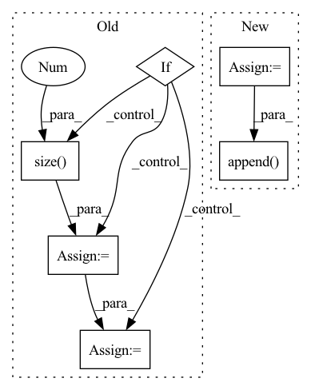

Pattern ID :2557
Before Change
greedy = inputs is None
// (B, T, mel_dim) -> (B, T", mel_dim*r)
if inputs is not None:
// Grouping multiple frames if necessary
if inputs.size(-1) == self.mel_dim:
inputs = inputs.reshape(B, inputs.size(1 ) // self.r, -1)
assert inputs.size(-1) == self.mel_dim * self.r
T_decoder = inputs.size(1)
// Time first (T", B, mel_dim*r)
if inputs is not None:After Change
// Project to mel
// (B, mel_dim*r) -> (B, r, mel_dim)
output = self.mel_proj(proj_input)
output = output.view(B, -1, self.mel_dim)
// Stop token prediction
stop = self.stop_proj(proj_input)
stop = torch.sigmoid(stop)
// Store predictions
mel_outputs.append( output)
attn_scores.append(attention_score.unsqueeze(1))
stop_tokens.extend([stop] * self.r)
if greedy:In pattern: SUPERPATTERN
Frequency: 3
Non-data size: 6
Instances Fragment ID: 14913947
Project Name: thuhcsi/tacotron
Commit Name: fea9ec535ec373aad564646f4f292fbee0217c29
Time: 2021-03-18
Author: johnson.tsing@gmail.com
File Name: model/tacotron.py
M Class Name: Decoder
N Class Name: Decoder
M Method Name: forward(4)
N Method Name: forward(4)
M Parent Class: nn.Module
N Parent Class: nn.Module
M File Name: model/tacotron.py
N File Name: model/tacotron.py
M Start Line: 87
M End Line: 187
N Start Line: 88
N End Line: 180
Before Change
self.has_mean = False
def forward(self, x):
if self.has_mean:
batch_size = x.data.size(0 )
x = x - torch.autograd.Variable(self.mean_img.repeat(batch_size, 1, 1, 1))
ind = -2
self.loss = NoneAfter Change
if self.training:
pass
else:
boxes = self.models[ind](x)
out_boxes.append( boxes)
elif block["type"] == "cost":
continue
else:
print("unknown type %s" % (block["type"])) Fragment ID: 14913946
Project Name: tianxiaomo/pytorch-yolov4
Commit Name: cf696adb6de3e2a8f68498ff9f2586f2ef62df3a
Time: 2020-04-25
Author: 1025568329@qq.com
File Name: tool/darknet2pytorch.py
M Class Name: Darknet
N Class Name: Darknet
M Method Name: forward(2)
N Method Name: forward(2)
M Parent Class: nn.Module
N Parent Class: nn.Module
M File Name: tool/darknet2pytorch.py
N File Name: tool/darknet2pytorch.py
M Start Line: 101
M End Line: 149
N Start Line: 114
N End Line: 172
Before Change
greedy = inputs is None
// (B, T, mel_dim) -> (B, T", mel_dim*r)
if inputs is not None:
// Grouping multiple frames if necessary
if inputs.size(-1) == self.mel_dim:
inputs = inputs.reshape(B, inputs.size(1 ) // self.r, -1)
assert inputs.size(-1) == self.mel_dim * self.r
T_decoder = inputs.size(1)
// Time first (T", B, mel_dim*r)
if inputs is not None:After Change
// Project to mel
// (B, mel_dim*r) -> (B, r, mel_dim)
output = self.mel_proj(proj_input)
output = output.view(B, -1, self.mel_dim)
// Stop token prediction
stop = self.stop_proj(proj_input)
stop = torch.sigmoid(stop)
// Store predictions
mel_outputs.append( output)
attn_scores.append(attention_score.unsqueeze(1))
stop_tokens.extend([stop] * self.r)
if greedy: Fragment ID: 14913944
Project Name: thuhcsi/tacotron
Commit Name: fea9ec535ec373aad564646f4f292fbee0217c29
Time: 2021-03-18
Author: johnson.tsing@gmail.com
File Name: model/tacotron2.py
M Class Name: Decoder
N Class Name: Decoder
M Method Name: forward(4)
N Method Name: forward(4)
M Parent Class: nn.Module
N Parent Class: nn.Module
M File Name: model/tacotron2.py
N File Name: model/tacotron2.py
M Start Line: 127
M End Line: 224
N Start Line: 127
N End Line: 216